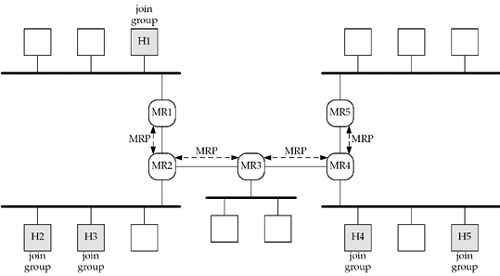
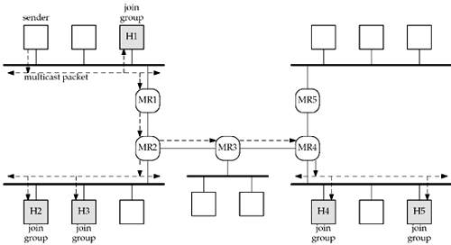

| [ Team LiB ] |
|
21.4 Multicasting on a WANMulticasting on a single LAN, as discussed in the previous section, is simple. One host sends a multicast packet and any interested host receives the packet. The benefit of multicasting over broadcasting is reducing the load on all the hosts not interested in the multicast packets. Multicasting is also beneficial on WANs. Consider the WAN shown in Figure 21.5, which shows five LANs connected with five multicast routers. Figure 21.5. Five LANs connected with five multicast routers.
Next, assume that some program is started on five of the hosts (say a program that listens to a multicast audio session) and those five programs join a given multicast group. Each of the five hosts then joins that multicast group. We also assume that the multicast routers are all communicating with their neighbor multicast router using a multicast routing protocol, which we designate as just MRP. We show this in Figure 21.6. Figure 21.6. Five hosts join a multicast group on a WAN. When a process on a host joins a multicast group, that host sends an IGMP message to any attached multicast routers telling them that the host has just joined that group. The multicast routers then exchange this information using the MRP so that each multicast router knows what to do if it receives a packet destined to the multicast address.
We now assume that a process on the host at the top left starts sending packets destined to the multicast address. Say this process is sending the audio packets that the multicast receivers are waiting to receive. We show these packets in Figure 21.7. Figure 21.7. Sending multicast packets on a WAN. We can follow the steps taken as the multicast packets go from the sender to all the receivers:
Two less desirable alternatives to multicasting on a WAN are broadcast flooding and sending individual copies to each receiver. In the first case, the packets would be broadcast by the sender, and each router would broadcast the packets out each of its interfaces, except the arriving interface. It should be obvious that this increases the number of uninterested hosts and routers that must deal with the packet. In the second case, the sender must know the IP address of all the receivers and send each one a copy. With the five receivers we show in Figure 21.7, this would require five packets on the sender's LAN, four packets going from MR1 to MR2, and two packets going from MR2 to MR3 to MR4. Now just imagine the situation with a million receivers! |
| [ Team LiB ] |
|